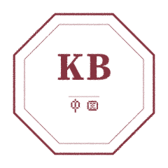

Visual density
Three asset families to lift KEY’s pages from "clean publication" to "Economist 1843 / NY Review of Books." Chapter fleurons. Brief seal. Body marginalia. Each one classical, restrained, never decorative for its own sake.
A · FleuronsFive chapter dividers
Five typographic ornaments for section breaks. Each ships in ink black (for body / chapter use) and seal burgundy (for emphasis breaks). All sit in a 64 × 16 viewBox; consume them at ~48 × 12 px on the page.
B · Brief sealsThe Editorial Office stamp
The single most KEY-specific visual symbol — a red seal stamped onto every Brief, the way an editor stamps a manuscript. This is the visual differentiator between KEY’s output and a generic AI response.
Four seal variants shipped: round (primary, Latin), round CN (with 中国 in the bottom arc), square (中国传统印章 · KEY top · 中国 bottom · 4 corner ornaments), and octagon (Western wax-seal hommage · KB + 中国).
The default. Use everywhere unless a CN-locale page calls for the CN variant.
Bottom arc reads BRIEF · 中国. Use on CN-locale Brief pages.
KEY top row, 中国 bottom row, double frame with 4 corner 回 motifs. Use on Founder Edition CN print run.

KB centered + hairline rule + small 中国 below. Hommage to 17C European wax seals.
In context · 80 px on a brief page
The trade-off you can’t un-see.
You came in asking whether to leave the job. The job is the symptom. The decision underneath is whether to lower the cost of being wrong about your last move.
第二节 · 你看不到的代价
你来的时候问的是要不要离职。离职是症状。真正的问题，是你愿不愿意降低上一次判断错的成本。
Note on CN glyphs
The CN characters 中 and 国 are hand-outlined paths, not from a CJK font. (The font fetch for Source Han Serif SC / Noto Serif SC timed out at the data size we needed.) The hand-drawn outlines read correctly at sizes 16 px and up; at the small arc-text size (≈13 px) 国 reads as a framed character with interior 王 structure rather than perfect 玉 detail. Acceptable for the first version; can be replaced with proper font-outlined glyphs in V2 once the CJK pipeline is wired up.
C · MarginaliaBody-page ornaments
Eight small ornaments for KEY’s long-form pages (Brief body, Sample Brief, /methodology, KEY Letter). Each one earns the page a touch of editorial-craft density without becoming busy. All 8 shipped.
The trade-off you can’t un-see.
You came in asking whether to leave the job. The job is the symptom. The decision underneath — and the only one you can act on this quarter — is whether to lower the cost of being wrong about your last move.
You may be mistaking guilt for responsibility.
You may be mistaking responsibility for choice.
That sentence cost the room ten minutes of silence the first time we wrote it on the wall.
We say so plainly because that is the work; the rest is consolation. A good brief earns the reader’s second reading.
D · FilesWhat’s shipped
| File | Pass | Description |
|---|---|---|
| fleurons/fleuron-classical-west.svg | 1st | Western S-curve classical · ink |
| fleurons/fleuron-classical-west-seal.svg | 1st | Western S-curve classical · burgundy |
| fleurons/fleuron-chinese-huiwen.svg | 1st | Chinese 回 motif · ink |
| fleurons/fleuron-chinese-huiwen-seal.svg | 1st | Chinese 回 motif · burgundy |
| fleurons/fleuron-key-derived.svg | 1st | KEY abstracted three strokes · ink |
| fleurons/fleuron-key-derived-seal.svg | 1st | KEY abstracted · burgundy |
| fleurons/fleuron-simple-diamond.svg | 1st | Diamond + flanking rules · ink |
| fleurons/fleuron-simple-diamond-seal.svg | 1st | Diamond + flanking rules · burgundy |
| fleurons/fleuron-double-rule.svg | 1st | Double parallel rules · ink |
| fleurons/fleuron-double-rule-seal.svg | 1st | Double parallel rules · burgundy |
| fleurons/README.md | 1st | Fleuron usage rules + V1→V2 questions |
| seals/brief-seal-round.svg | 1st | Primary round seal · all-text outlined · Latin "ANNO MMXXVI" |
| seals/brief-seal-round-cn.svg | 2nd | Round seal · CN variant · BRIEF · 中国 |
| seals/brief-seal-square.svg | 2nd | Square seal · KEY + 中国 · 4 corner 回 motifs |
| seals/brief-seal-octagon.svg | 2nd | Octagon seal · KB + 中国 · Western wax-seal |
| seals/README.md | 1st | Seal usage + technical notes + V1→V2 questions |
| marginalia/section-start-line.svg | 1st | Section opening rule + terminal dot |
| marginalia/section-end-line.svg | 2nd | Section closing cross + flanking rules |
| marginalia/quote-bracket-left.svg | 1st | Pull-quote left bracket |
| marginalia/quote-bracket-right.svg | 1st | Pull-quote right bracket |
| marginalia/paragraph-divider.svg | 1st | Three vertical dots between paragraphs |
| marginalia/interrogation-mark.svg | 2nd | "Pose-a-question" marker |
| marginalia/footnote-marker.svg | 2nd | Classical † footnote anchor |
| marginalia/page-break-fleuron.svg | 2nd | Full-width page-break · rule + center fleuron |
| marginalia/README.md | 1st | Marginalia usage + V1→V2 questions |
All passes complete
- 10 fleurons (5 designs × 2 colors) — shipped, outlined paths, ~0.5 KB each.
- 4 brief seals — round (Latin) + round CN + square + octagon, all text outlined via opentype.js + hand-drawn 中 国 paths.
- 8 marginalia — full set shipped: section-start/end-line, quote-bracket-L/R, paragraph-divider, interrogation-mark, footnote-marker, page-break-fleuron.
- 3 README.md — one per asset folder, each with V1→V2 questions.